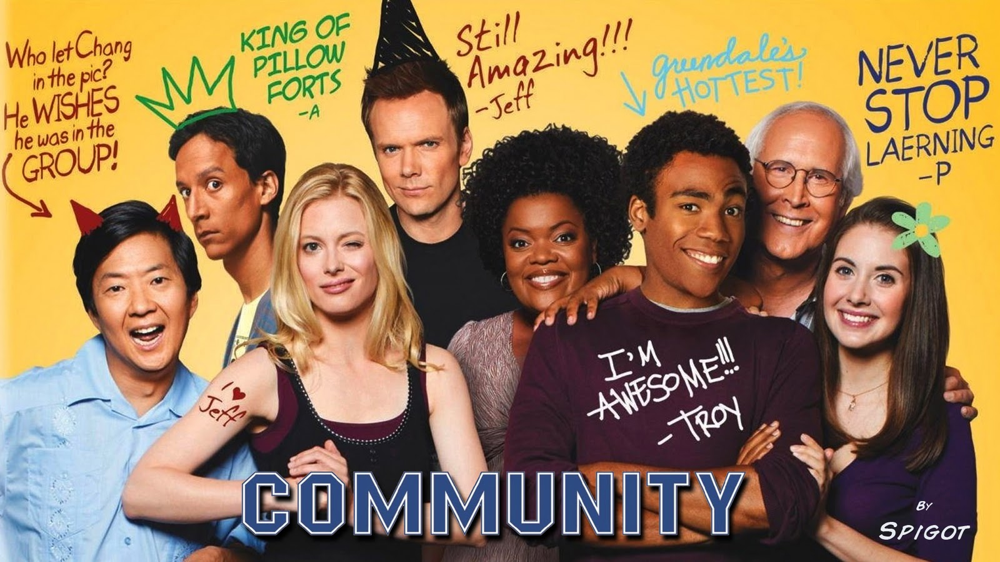
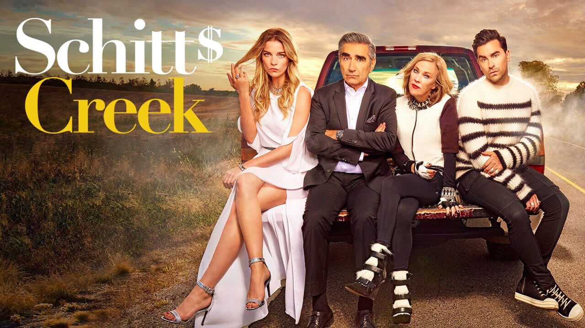

5/06/21 // Tags: Misc. || list
Three Other Comedies You Should Definitely Watch
While rewatching The Office, Parks and Recreation, and Brookyln Nine-NIne is definitely satisfying, here's three other shows you should definitely check out to fill the void in your heart.

Superstore

Synopsis: "Superstore" centers around Amy (America Ferrera), the store's most stalwart employee as well as the glue holding the place together, and newly hired Jonah (Ben Feldman), a naive dreamer determined to prove work doesn't have to be boring. Their fellow associates include the sardonic Garrett (Colton Dunn) the ambitious Mateo (Nico Santos) and the sweet pregnant teenager, Cheyenne (Nichole Bloom). Overseeing them all are Glenn (Mark McKinney) the store's affable, clueless store manager, and Dina (Lauren Ash), the aggressive assistant manager who lives by a very specific code - namely the store's employee handbook.
One of my friends described Superstore as "The Office but like if they worked at Target," and she is absolutely right. Anyone who works in the service industry could relate to the frustrations of working in a job that only seems to hold you back. While the plot itself is always amusing, the customer cutaways between scenes add to its appeal, showing people doing the grossest, dumbest, and most random things ever. The cast is extremely diverse and has well-rounded, multi-dimensional personalities, and the show gracefully touches on important and outrageous social issues, like unions, corporate greediness, and immigration.
Community
Synopsis: When fast-talking lawyer Jeff Winger (Joel McHale) finds his degree has been revoked, he is forced to go back to school at Greendale Community College. Hoping to score points with a pretty coed, he invents a study group and invites her to join it. Imagine his surprise when she's not the only one who shows up for help with Spanish from the "board-certified tutor" he proclaims himself to be. Though his command of the language is anything but good, the members continue to meet and end up learning a lot about themselves.
Community is one of the best shows I've seen in a long time, and it's so underrated but should be ranked with the likes of those three Schur comedy legends. The show is undeniably unique, straying away from traditional sitcoms with its very witty, original, and somewhat meta style and humor. The relationships and friendships are complex and so genuinely heartwarming, and the characters are never pure saints, merely pure humans with complex personalities, but you still connect and care for them instantly.
Another brilliant thing about Community is the originality of each episode. With "special" episodes centered around TV tropes and genres (i.e Star Wars, video games, D&D), the show does not disappoint and remains brilliantly creative and unique throughout its six seasons.
Schitt's Creek
Synopsis: Johnny and Moira Rose are nouveau riche, their wealth largely from Johnny's video store empire, the second-largest in North America. With that wealth, Moira was able to put her life as a daytime soap-opera actress behind her. As they have always led a garish life of excessive wealth, their now-adult offspring, David and Alexis, have been spoiled, not knowing anything but having whatever they wanted handed to them on a silver platter their entire lives, and not having had to work a day in their lives. Their collective lives change when out of circumstance they end up broke except for the one asset Johnny bought for David years earlier as a joke: a small backwater town called Schitt's Creek. The Roses are forced to move there, initially living in the Schitt's Creek Motel. The town's founding family, the Schitts, still largely control the town in their seemingly unsophisticated ways. The Roses do whatever they can to find a way back to their previous life, but in the meantime have to try to eke out a life in their new home, which is totally outside their sensibilities.
An award-winning show, and for a good reason, Schitt's Creek is a heartwarming, one-of-a-kind comedy. The character development is phenomenal, and the cast is charmingly quirky and unique. The show definitely plays on your heartstrings, and the emotions and feels will make the ending feel so, so bittersweet. A very small detail, but the outfits are amazing, and the show, in general, is just amazing.